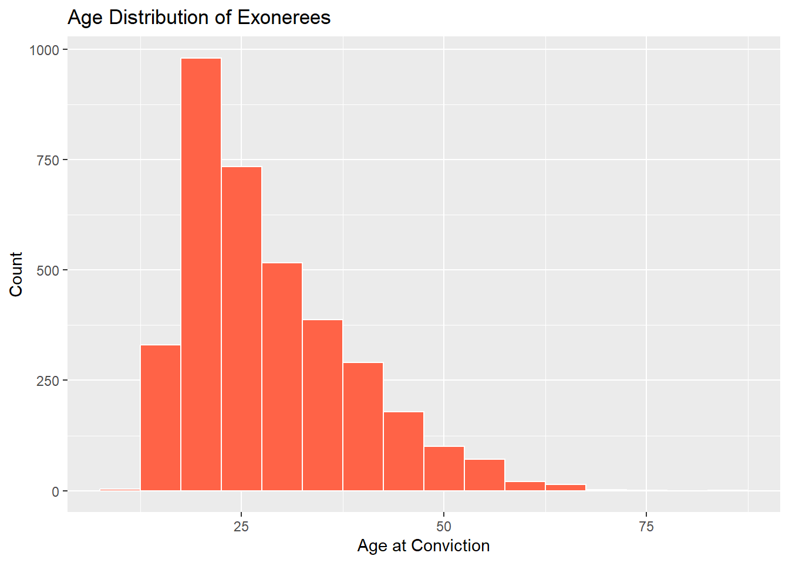
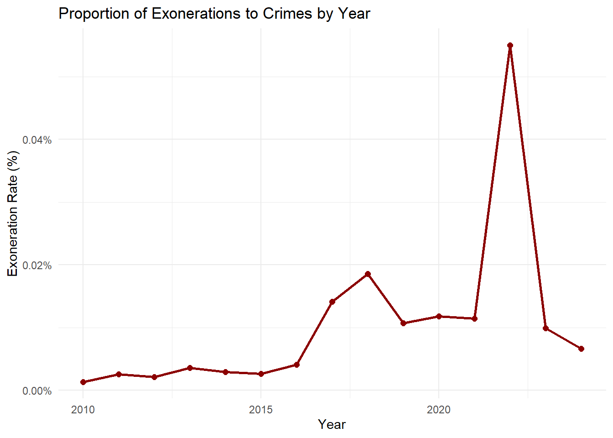

Here we provide a detailed analysis using more sophisticated statistics techniques.
This comes from the file analysis.qmd.
We describe here our detailed data analysis. This page will provide an overview of what questions you addressed, illustrations of relevant aspects of the data with tables and figures, and a statistical model that attempts to answer part of the question. You’ll also reflect on next steps and further analysis.
The audience for this page is someone like your class mates, so you can expect that they have some level of statistical and quantitative sophistication and understand ideas like linear and logistic regression, coefficients, confidence intervals, overfitting, etc.
While the exact number of figures and tables will vary and depend on your analysis, you should target around 5 to 6. An overly long analysis could lead to losing points. If you want you can link back to your blog posts or create separate pages with more details.
The style of this paper should aim to be that of an academic paper. I don’t expect this to be of publication quality but you should keep that aim in mind. Avoid using “we” too frequently, for example “We also found that …”. Describe your methodology and your findings but don’t describe your whole process.
Example of loading data
The code below shows an example of loading the loan refusal data set (which you should delete at some point).
library(tidyverse)
── Attaching core tidyverse packages ──────────────────────── tidyverse 2.0.0 ──
✔ dplyr 1.1.4 ✔ readr 2.1.5
✔ forcats 1.0.0 ✔ stringr 1.5.1
✔ ggplot2 3.5.1 ✔ tibble 3.2.1
✔ lubridate 1.9.4 ✔ tidyr 1.3.1
✔ purrr 1.0.2
── Conflicts ────────────────────────────────────────── tidyverse_conflicts() ──
✖ dplyr::filter() masks stats::filter()
✖ dplyr::lag() masks stats::lag()
ℹ Use the conflicted package (<http://conflicted.r-lib.org/>) to force all conflicts to become errors
print(getwd())
[1] "C:/MA615/ma4615-sp25-final-project-team-10"
data <-read_rds(here::here("dataset/loan_refusal_clean.rds"))
Note on Attribution
In general, you should try to provide links to relevant resources, especially those that helped you. You don’t have to link to every StackOverflow post you used but if there are explainers on aspects of the data or specific models that you found helpful, try to link to those. Also, try to link to other sources that might support (or refute) your analysis. These can just be regular hyperlinks. You don’t need a formal citation.
If you are directly quoting from a source, please make that clear. You can show long quotes using > like this
> To be or not to be.
To be or not to be.
Rubric: On this page
You will
Introduce what motivates your Data Analysis (DA)
Which variables and relationships are you most interested in?
What questions are you interested in answering?
Provide context for the rest of the page. This will include figures/tables that illustrate aspects of the data of your question.
Modeling and Inference
The page will include some kind of formal statistical model. This could be a linear regression, logistic regression, or another modeling framework.
Explain the ideas and techniques you used to choose the predictors for your model. (Think about including interaction terms and other transformations of your variables.)
Describe the results of your modelling and make sure to give a sense of the uncertainty in your estimates and conclusions.
Explain the flaws and limitations of your analysis
Are there some assumptions that you needed to make that might not hold? Is there other data that would help to answer your questions?
Clarity Figures
Are your figures/tables/results easy to read, informative, without problems like overplotting, hard-to-read labels, etc?
Each figure should provide a key insight. Too many figures or other data summaries can detract from this. (While not a hard limit, around 5 total figures is probably a good target.)
Default lm output and plots are typically not acceptable.
Clarity of Explanations
How well do you explain each figure/result?
Do you provide interpretations that suggest further analysis or explanations for observed phenomenon?
Organization and cleanliness.
Make sure to remove excessive warnings, hide all code, organize with sections or multiple pages, use bullets, etc.
This page should be self-contained, i.e. provide a description of the relevant data.
Research Motivation and Questions
Our project seeks to understand the factors that predict whether false evidence—such as official misconduct, perjury/false accusation, or false confessions—is involved in a wrongful conviction case. These elements not only raise serious ethical and legal concerns but may also signal systemic failures in the criminal justice process. The core question we ask is: What characteristics of a case or an individual are associated with the presence of false evidence?
We are particularly interested in demographic variables (e.g., race, sex, age), case-related variables (e.g., type of crime, DNA involvement), and legal procedures (e.g., mistaken witness identification). We hypothesize that wrongful convictions involving false evidence may disproportionately affect specific racial groups or younger defendants and may correlate with the absence of forensic support (e.g., DNA). These hypotheses are explored both through descriptive plots and through logistic regression modeling.
Data Sources and Collection
National Registry of Exonerations (NRE) This dataset was collected by a joint effort between the University of Michigan Law School, the University of California Irvine, and Michigan State University College of Law. It documents over 3,600 cases of wrongful convictions in the United States, along with rich details such as the race, age, and sex of exonerees, type of crime, and contributing factors like official misconduct, mistaken witness identification, or DNA evidence. It was curated to support legal research, reform efforts, and public awareness regarding flaws in the justice system.
Chicago Crimes 2001–Present Dataset This dataset is maintained by the Chicago Police Department and published through the City of Chicago’s open data portal. It records all reported crimes in Chicago, including type, location, time, and whether an arrest was made. While we’ve cleaned and prepared this dataset, our current analysis is focused on the NRE data, with plans to incorporate Chicago crime patterns in future modeling.
We cleaned and used exoneration_data_clean.rds and crime_data_2010_clean.rds. The NRE dataset provides case-level features such as: ·Race, Sex, Age ·State, County ·Worst_Crime_Display ·Convicted, Exonerated ·DNA, MWID, OM, P/FA, FC: Tags for DNA evidence, mistaken witness ID, official misconduct, perjury/false accusation, and false confession.
We derived a new binary variable, False_Evidence, defined as 1 if any of OM, P/FA, or FC is present. This is our primary modeling outcome.
Exploratory Data Insights

Insight: Drug Possession or Sale and Murder clearly top the list, far exceeding other offenses in frequency. The prominence of these charges may reflect both the scale of their prosecution and their susceptibility to wrongful conviction—drug cases often involve questionable search procedures, while murder cases tend to rely on high-pressure investigations that may introduce coerced confessions or witness errors. Sexual Assault also ranks high, likely due to the significant role of flawed or misinterpreted forensic evidence in such cases. While crimes like Robbery and Burglary appear in the top ten, they occur at much lower rates. The dominance of severe offenses in this chart suggests that systemic problems—such as official misconduct, unreliable testimony, or investigative bias—are particularly prevalent, or at least more frequently uncovered, in high-stakes convictions.

Insights: This histogram shows the distribution of exonerees’ ages at the time of their conviction. The majority were between 18 and 30 years old, suggesting that young adults are especially vulnerable to wrongful convictions. This pattern may stem from factors such as limited access to legal representation, increased susceptibility to coercion during interrogations, and targeted policing practices that disproportionately affect younger individuals. The distribution declines steadily with age, with very few exonerees convicted after age 50. These findings are consistent with existing research indicating that youth, particularly from marginalized backgrounds, are at heightened risk of being falsely accused or convicted.
Modeling and Inference
We used logistic regression to examine predictors of false evidence:
·Race: None of the race variables were statistically significant at 5%, but some showed directionality (e.g., Hispanic ·and Black with positive estimates). ·Sex: Being male had a large negative coefficient but was not statistically significant. ·Age: A marginally significant effect (p = 0.085), where older age slightly reduced the odds of false evidence. ·Crime Type: Murder and Drug Possession had positive associations but were not significant. ·DNA_binary: Positive but non-significant. ·MWID_binary: Strong and significant negative association (p < 0.001), suggesting mistaken ID is less likely to co-occur with false evidence.
Fit Metrics: ·Residual deviance: 69.1 on 456 df (from 146.8) ·AIC: 113.1 ·Indicates the model has strong separation power, though individual coefficients have high uncertainty due to sparse categories.
Limitations Several limitations constrain our current analysis. First, the exoneration dataset captures only known wrongful convictions, meaning our findings reflect observed and documented cases—not the full universe of potential errors. Second, many variables are simplified binary tags (e.g., DNA = 1/0), which may obscure the complexity of evidence quality or legal procedures. Additionally, several crime types appear infrequently in the dataset, leading to large standard errors and unstable estimates in our logistic regression model. Finally, the analysis is cross-sectional rather than causal, and more granular or longitudinal data (e.g., case-level court transcripts, time to conviction/exoneration) would be needed to make stronger causal claims.
Conclusion Our analysis highlights key patterns in wrongful conviction cases involving false evidence. While demographic and crime-related variables show suggestive trends, mistaken witness identification emerges as a significant factor—negatively associated with false evidence. This insight may indicate that false evidence and mistaken ID are distinct pathways to wrongful convictions. Young adults remain disproportionately affected, as shown in both the model and descriptive visuals.
Although constrained by binary simplifications and data sparsity, our model offers a preliminary view of what systemic risk factors may underlie certain conviction outcomes. Future work should include richer data (e.g., qualitative case summaries or trial records) and build temporal models that consider changes over time. Integrating external datasets like city-level crime or policy shifts may also strengthen causal inferences.